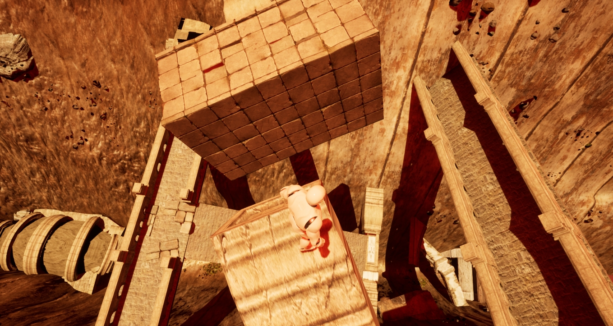

Vues de la zone de départ.
Je l'ai toujours sû au fond de moi, il fallait juste passer par les vieilles ruines...
Vue de l'Ascension
L'ascension ne s'annonce pas aussi simple que je l'avais imaginée.
Vue de l'Ascension
La moindre chute et c'est le retour à 0...
Partie "basse" de l'ascension
Partie "moyenne" de l'ascension
Partie "haute" de l'ascension
Vue du Layout par le ciel
Vidéo de présentation de la traversée du Rift
Vidéo de l'activation du Pont